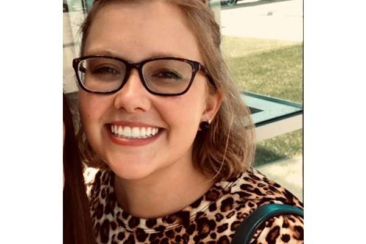

People
PI
Steven Smith, PharmD, MPH is an Assistant Professor in the Department of Pharmaceutical Outcomes & Policy (College of Pharmacy) and Division of Cardiovascular Medicine (College of Medicine) at the University of Florida. I also serve as the Associate Director (population sciences) for the UF Center for Integrative Cardiovascular and Metabolic Disease. My research methodology is fairly wide-ranging, encompassing clinical trial work and observational methods (e.g., with claims and electronic health record data), though my therapeutic focus is primarily in the field of hypertension.
Current Postdoc(s)

Christie Monahan, PharmD is the 2021-2023 postdoctoral fellow in the Departments of Pharmacotherapy and Translational Research and Community Health and Family Medicine. Her work is primarily centered on health services research around pharmacist-managed transitions of care. She is also involved in our hypertension research.
Current Grad Students
Shailina Keshwani, MS is a PhD student in the Department of Pharmaceutical Outcomes and Policy. Her research is focused on the intersection of pain and cardiovascular disease and specifically use of analgesics in patients with cardiovascular disease who have contraindications to such medications.
Asinamai Ndai, MS is a PhD student in the Department of Pharmaceutical Outcomes and Policy. His research is focused on the intersection of hypertension and HIV.

Kayla Smith, PharmD is a PhD student in the Department of Pharmaceutical Outcomes and Policy. She previously worked with me on several project characterizing antihypertensive use patterns during her Doctor of Pharmacy degree program.
Analyst(s)

Marta Walsh, MS is our analyst and basically single-handedly manages our messy data and keeps us moving forward. She’s a former UF and Embry-Riddle grad and our shop wouldn’t be what it is without her.
Former Trainees

Raj Desai, PhD was my first PhD student in the Department of Pharmaceutical Outcomes and Policy. His work was primarily centered on use of secondary datasets (administrative claims, EHR) for studying cardiovascular outcomes and performing comparative effectiveness research in patients with complicated antihypertensive regimens. He is now an Associate - Health Economics and Outcomes Research at the Analysis Group in Boston, MA.
Chris Piszczatoski, PharmD was our 2019-2021 postdoctoral fellow in the Departments of Pharmacotherapy and Translational Research and Community Health and Family Medicine. He is now on staff in the UF Community Health and Family Medicine.

Ghadeer Dawwas, PhD was a postdoctoral fellow (2019-2020) in pharmacoepidemiology, with a focus on cardiometabolic outcomes of novel antidiabetic agents. She is now on faculty at Vanderbilt University.
Scott Garland, PharmD was our 2017-2019 postdoctoral fellow in the Departments of Pharmacotherapy and Translational Research and Community Health and Family Medicine. He is now on faculty of the FSU College of Medicine.
Andrew Hwang, PharmD was our 2015-2017 postdoctoral fellow in the Departments of Pharmacotherapy and Translational Research and Community Health and Family Medicine. He is now on faculty at the Massachusetts College of Pharmacy and Health Sciences.
Join the Group
See the about page for information on joining the group.